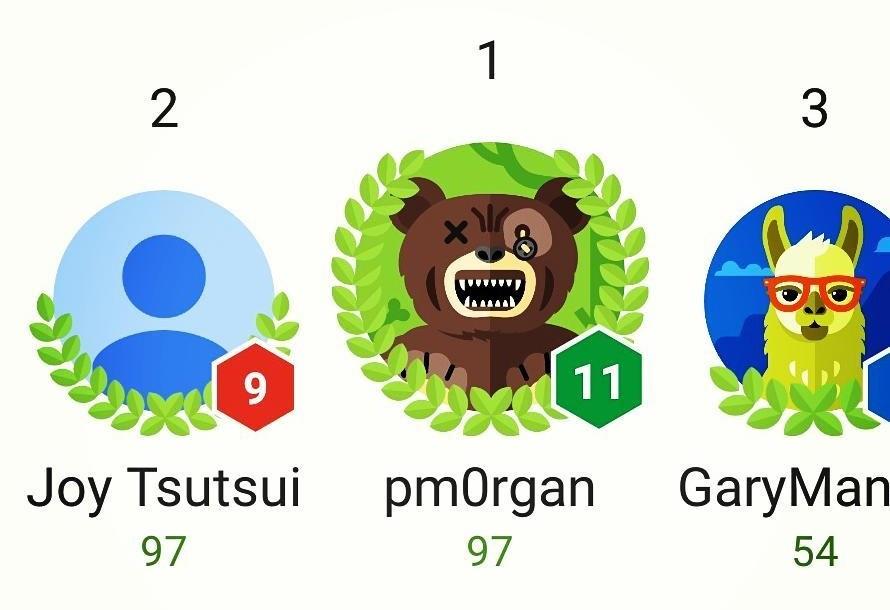

Rainbow Blues Cat
Solo-developed arcade game for Android and iOS
Overview
Rainbow Blues Cat was mobile game built entirely on my own released on Android and iOS in 2015. It was a simple arcade style game where the character is moved by the player's finger placement on the screen to avoid bombs falling from above for as long as possible.
Development
The concept stemmed from a prior game titled "Rainbow Space Ninja", created during a college course, simply named based on the free assets used in it. That project was a 3D Linux game made in the OGRE engine that became the base inspiration to make a simplified and more polished 2.5D mobile game variation two years later as a personal Unity project.


I took the core rainbow asset from Rainbow Space Ninja and used it as the background effect for this game. This asset was in fact just a random, colorful, square UI texture that I squished in horizontally and made infinitely scroll, creating a sort of hyperspace rainbow-like effect. I created the rest of the art myself as well as the music track. From there I would handle all programming and put in additional features like leaderboards, social media sharing, and ad integration.

Outcome
Despite collaborating on many previous gaming projects, Rainbow Blues Cat would be the first game I shipped as a complete product on official digital storefronts. Working on a solo project allowed me full control to rein in the scope and focus on a simple but polished experience that could realistically make it to the finish line.